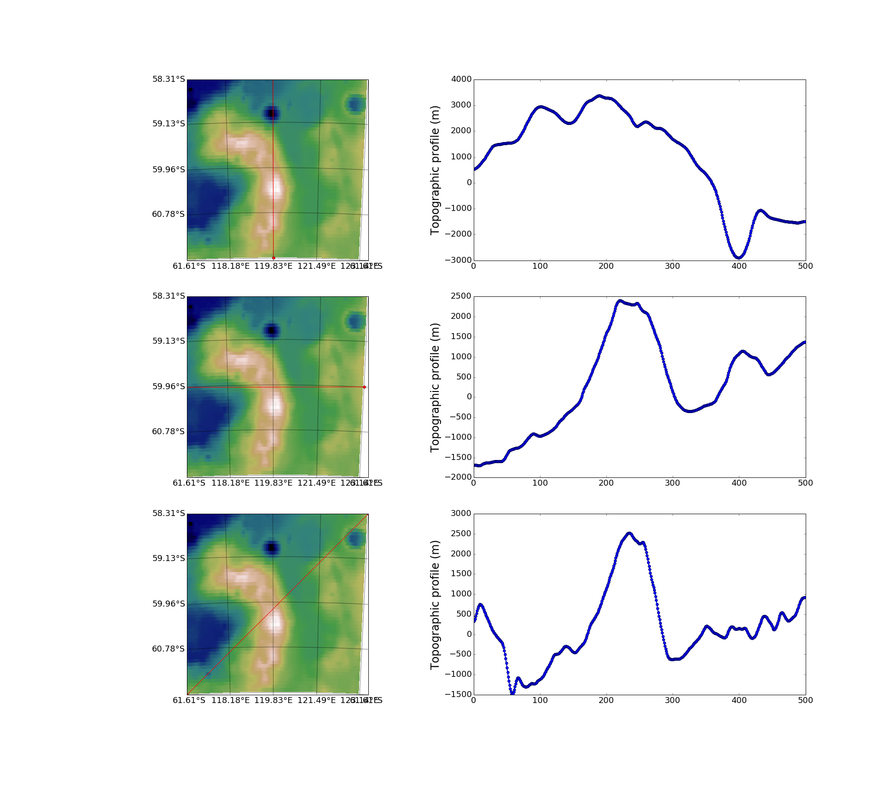

Studying specific region and making beautiful plot¶
While PDS_Extractor has been designed to facilitate the extraction
of data, Structure is more related to the visualization of these
data. It contains three Class:
- Area: Use to study random region at the lunar surface
- Crater: Use to study specific impact crater at the lunar surface
- Dome: Use to study specific low-slope dome at the lunar surface
Area¶
This class aim to study a specific location at the surface of the Moon through images and its topography. Indeed, given a region of interest defined by its centered (longitude,latitude) and a radius (km), the class allows to plot different information:
lola_imagerealize a plot of the region topographywac_imagerealize an image of the regionoverlayrealize an overlay of the image with its topographydraw_profileallows to plot different topographic profile along with the map where you can visualize the trace.
For instance, if we take back the region of interest and decide to really plot the overlay this time, we can do:
from Structure import Area
%matplotlib inline
region = Area(120,-60,5)
region.ppdlola = 64
region.ppdwac = 64
region.overlay(True, 'region.png')
This two line of code produce the image below

If you want to zoom in, simply change the size of the window:
region.change_window(1)
region.overlay(True, 'region_zoomed_in.png')

Outside of plotting the topography or the image alone, the method
draw_profile is of particular interest to get some insight into
the topography. It can be used as follows:
midlon = (region.window[0]+region.window[1])/2.0
midlat = (region.window[2]+region.window[3])/2.0
profile1 = (midlon,midlon,region.window[2],region.window[3]) #Vertical profile
profile2 = (region.window[0],region.window[1],midlat,midlat) #Horizontal profile
region.draw_profile((profile1,profile2,region.window,))
which results in three nice topographic profiles along with a map with their corresponding trace.
Crater¶
This class is specifically designed to work with lunar impact craters. Indeed, the library integrates a table containing information about all referenced impact craters on the Moon. It is a compilation of the data from Salamuniccar et al, 2011, Jozwiak et al, 2015 and Losiak et al, 2009.
The table references six features for each feature which are also set as attribute of the class:
- name: Name of the crater is exist
- lat0: Center latitude of the crater (degree)
- lon0: Center longitude of the crater (degree)
- diameter: Crater diameter (km)
- type: 1 if the crater is a floor-fractured crater, 0 otherwise
- radius: Radius of the crater (km)
- index: index in the table
For instance, say we want to study the crater Copernicus, a 93 km in diameter normal crater, simply use:
Copernicus = Crater('name','Copernicus')
As it is based on the Area class, it inherits all of these method and the example shown above can be taken for working here as well. In particular, you can easily figure what does it looks like:
Copernicus.overlay()
If you are not familiar with their name, you can also use their index in the table such that:
RandomCrater = Crater('index',53)
Also, you can access to the table by using the method craters of
this class. For instance, using:
df = RandomCrater.craters()
will store the table in a pandas dataframe named df.
Dome¶
This class is build in a similar fashion the the Crater class but
contains information about low-slope domes. To get the corresponding
table, simply used its method domes.
For instance, the dome called M13 looks like:
M13 = Dome('name','M13')
M13.ppdlola = 64
M13.ppdwac = 64
M13.overlay(True, os.path.join(imagep,'M13.png'))

Index¶
-
class
pdsimage.Structure.Area(lon0, lat0, Size, path_pdsfile='/Users/thorey/miniconda2/envs/bayescrat/lib/python2.7/site-packages/pdsimage/PDS_FILES')¶ Bases:
objectA class which gather information on a specific location
It is particularly useful to study a particular location at the surface of the Moon. For the moment, it can gather information about the topography (from LRO LOLA experiment) and texture (from the LRO WAC experiment). More information about the Lunar Reconnaissance Orbiter mission (LRO) can be found here
Parameters: - lon0 (float) – Center longitude of the region of interest.
- lat0 (float) – Center latitude of the region of interest.
- size (float) – Radius of the region of interest.
- path_pdsfiles (Optional[str]) –
Path where the pds files are stored. Defaults, the path is set to the folder
PDS_FILESnext to the module files where the library is install.See
defaut_pdsfilevariable of the class.
-
path_pdsfiles¶ Path where the pds_files are stored.
-
lon0¶ float – Longitude of the region of interest.
-
lat0¶ float – Latitude of the region of interest.
-
ppdlola¶ int – Resolution for the topography
-
ppdwac¶ int – Resolution for the WAC image
-
size_window¶ float – Radius of the region of interest (km)
-
window¶ float,float,float,float –
(longll, longtr, latll, lattr)with:longllthe longitude of the lower left cornerlongtrthe longitude of the top right cornerlatllthe latitude of the lower left cornerlattrthe latitude of the top right corner
Note
It is important to respect the structure of the PDS_FILES folder. It should contain 2 subfolder called
LOLAandLROC_WACwhere the corresponding images should be download.The abreviations correspond to:
- LRO Lunar Reconnaissance Orbiter
- LOLA Lunar Orbiter Laser Altimeter
- LROC Lunar Reconnaissance Orbiter Camera
- WAC Wide Angle Camera
Example
For instance, say we want to get an overlay, the topography drawn over an wide angle camera image, of a region centred around 10 East and 10 North of about 20 km
>>> C = Area(10,10,20) >>> C.overlay()
-
change_window(size_window)¶ Change the region of interest
Parameters: size_window (float) – Radius of the region of interest (km) Notes
Change the attributes
size_windowandwindowto correspond to the new region of interest.
-
cylindrical_window(radius, lat0, long0)¶ Cylindrical projection of a window centered at (lat0, long0) with a given radius (km).
Parameters: - radius (float) – Radius of the window (km).
- lat0 (float) – Latitude at the center (degree).
- long0 (float) – Longitude at the center (degree).
Returns: A tuple
(longll, longtr, latll, lattr)` with ``longllthe longitude of the lower left corner,longtrthe longitude of the top right corner,latllthe latitude of the lower left corner andlattrthe latitude of the top right corner.Note
All return coordinates are in degree
-
defaut_pdsfile= '/Users/thorey/miniconda2/envs/bayescrat/lib/python2.7/site-packages/pdsimage/PDS_FILES'¶
-
draw_profile(coordinates, num_points=500, save=False, name='BaseProfile.png')¶ Draw a profile between a point (lon0,lat0) and (lon1,lat1).
Parameters: - coordinates –
Tupples which list the different desired profiles.
Each profil has to be defined as a tupple which follows (lon0,lon1,lat0,lat1) with (lon0,lat0) the first point coordintes and (lon1,lat1) the second point coordinates. Both in degree.
- num_points (Optional[int]) – Number of points to use in the interpolation process. Defaults to 100.
- save (Optional[bool]) – Weither or not to save the image. Defaults to False.
- name (Optional[str]) – Absolut path to save the resulting image. Default to ‘BaseProfile.png’ in the working directory.
Example
Here is an example for a region located (10E,10N) 20 km in diameter with three different profiles:
- One North-South
- One East-West
- One inclined
>>> Region = Area(10,10,20) >>> midlon = (Region.window[0]+Region.window[1])/2.0 >>> midlat = (Region.window[2]+Region.window[3])/2.0 >>> profile1 = (midlon,midlon,Region.window[2],Region.window[3]) >>> profile2 = (Region.window[0],Region.window[1],midlat,midlat) >>> Region.draw_profile((profile1,profile2,Region.window,))
Warning
If only one profile is given,
coordinates = (profile1,). If more than one is given, usecoordinates = (profile1,profile2,profile3,)IF YOU DECIDE TO CHANGE THE PATH, YOU HAVE TO WRITE region.draw_profile(
(profile1,profile2,region.window,), save = True, name = newpath)FOR SOME REASON, USING ONLY region.draw_profile(
(profile1,profile2,region.window,), True, newpath)IS NOT WORKING
- coordinates –
-
get_arrays(type_img)¶ Return arrays the region of interest
Parameters: type_img (str) – Either lola or wac. Returns: A tupple of three arrays (X,Y,Z)withXcontains the longitudes,Ycontains the latitude andZthe values extracted for the region of interest.Note
The argument has to be either lola or wac. Note case sensitive. All return arrays have the same size.
All coordinates are in degree.
-
get_profile(img_type, coordinate, num_points)¶ Extract a profile from (lat1,lon1) to (lat2,lon2)
Parameters: - img_type (str) – Either lola or wac.
- coordinate (float,float,float,flaot) –
A tupple
(lon0,lon1,lat0,lat1)with:- lon0: First point longitude
- lat0: First point latitude
- lon1: Second point longitude
- lat1: Second point latitude
- num_points (int) – Number of points to use in the interpolation process.
Note
Be carefull, longitude has to be in between 0-360 !
-
lambert_window(radius, lat0, long0)¶ Square Lambert Azimuthal equal area projection of a window centered at (lat0, long0) with a given radius (km).
Parameters: - radius (float) – Radius of the window (km).
- lat0 (float) – Latitude at the center (degree).
- long0 (float) – Longitude at the center (degree).
Returns: A tuple
(longll, longtr, latll, lattr)withlongllthe longitude of the lower left corner,longtrthe longitude of the top right corner,latllthe latitude of the lower left corner andlattrthe latitude of the top right corner.Note
All return coordinates are in degree
-
lola_image(save=False, name='BaseLola.png')¶ Draw the topography of the region of interest
Parameters: - save (Optional[bool]) – Weither or not to save the image. Defaults to False.
- name (Optional[str]) – Absolut path to save the resulting image. Default to ‘BaseLola.png’ in the working directory.
Returns: An image correponding to the region tography. Realized from the data taken by the LOLA instrument on board of LRO.
Note
Nice to use in a jupyter notebook with
%matplotib inlineactivated.Feel free to modify this method to plot exactly what you need.
-
overlay(save=False, name='Baseoverlay.png')¶ Draw the topography over a wide angle image of the region
Parameters: - save (Optional[bool]) – Weither or not to save the image. Defaults to False.
- name (Optional[str]) – Absolut path to save the resulting image. Default to ‘Baseoverlay.png’ in the working directory.
Returns: An image corresponding to an overaly of the topography and a wide angle image. Realized from the data taken by the LOLA and LROC instrument on board of LRO.
Note
Nice to use in a jupyter notebook with
%matplotib inlineactivated.Feel free to modify this method to plot exactly what you need.
-
wac_image(save=False, name='BaseWac.png')¶ Draw the wide angle image of the region of interest
Parameters: - save (Optional[bool]) – Weither or not to save the image. Defaults to False.
- name (Optional[str]) – Absolut path to save the resulting image. Default to ‘BaseWac.png’ in the working directory.
Returns: An image corresponding to the region wide angle image. Realized from the data taken by the LROC instrument on board of LRO.
Note
Nice to use in a jupyter notebook with
%matplotib inlineactivated.Feel free to modify this method to plot exactly what you need.
-
class
pdsimage.Structure.Crater(ide, idx, path_pdsfile='/Users/thorey/miniconda2/envs/bayescrat/lib/python2.7/site-packages/pdsimage/PDS_FILES')¶ Bases:
pdsimage.Structure.AreaA class which gathers information on impact crater.
It is particularly useful to study a particular impact crater at the lunar surface. For the moment, it can gather information about its topography (from LRO LOLA experiment) and texture (from the LRO WAC experiment). More information about the Lunar Reconnaissance Orbiter mission (LRO) can be found here
Parameters: - ide (str) –
"name"if you use the crater name or"index"if you use its index in the table. - idx – Name of the crater if you fill
"name"as a first parameter or its index in the table if you fill"index"as a first parameter. - path_pdsfiles (Optional[str]) –
Path where the pds files are stored. Defaults, the path is set to the folder
PDS_FILESnext to the module files where the library is install.See
defaut_pdsfilevariable of the class.
-
path_pdsfiles¶ Path where the pds_files are stored.
-
ppdlola¶ int – Resolution for the topography
-
ppdwac¶ int – Resolution for the WAC image
-
racine¶ str – Path where information about the impact crater dataset is stored as a table. Defaults to the folder Tables in the installation folder of the library.
-
craters¶ Pandas dataframes containing the information of all impact craters.
-
name¶ str – Name of the crater considered.
-
lat0¶ float – Latitude of the crater center (degree)
-
lon0¶ float – Longitude of the crater center (degree)
-
diameter¶ float – Crater diameter (km)
-
type¶ int – 1 if the crater is a Floor-fractured crater, 0 otherwise
-
radius¶ float – Radius of the crater (km)
-
index¶ str – Index of the crater in the table
-
size_window¶ float – Radius of the region of interest (km). Defaults to 80 % of the crater diameter.
-
window¶ float,float,float,float –
(longll, longtr, latll, lattr)with:longllthe longitude of the lower left cornerlongtrthe longitude of the top right cornerlatllthe latitude of the lower left cornerlattrthe latitude of the top right corner
Note
It is important to respect the structure of the PDS_FILES folder. It should contain 2 subfolder called
LOLAandLROC_WACwhere the corresponding images should be download.The abreviations correspond to:
- LRO Lunar Reconnaissance Orbiter
- LOLA Lunar Orbiter Laser Altimeter
- LROC Lunar Reconnaissance Orbiter Camera
- WAC Wide Angle Camera
Example
For instance, say we want to get an overlay, the topography drawn over a wide angle camera image, of the famous crater Copernicus
>>> C = Crater('name','Copernicus') >>> C.overlay()
- ide (str) –
-
class
pdsimage.Structure.Dome(ide, idx, path_pdsfile='/Users/thorey/miniconda2/envs/bayescrat/lib/python2.7/site-packages/pdsimage/PDS_FILES')¶ Bases:
pdsimage.Structure.AreaA class which gathers information on lunar low-slope dome.
It is particularly useful to study a particular low-slope dome at the lunar surface. For the moment, it can gather information about its topography (from LRO LOLA experiment) and texture (from the LRO WAC experiment). More information about the Lunar Reconnaissance Orbiter mission (LRO) can be found here
Parameters: - ide (str) –
"name"if you use the dome name or"index"if you use its index in the table. - idx – Name of the dome if you fill
"name"as a first parameter or its index in the table if you fill"index"as a first parameter. - path_pdsfiles (Optional[str]) –
Path where the pds files are stored. Defaults, the path is set to the folder
PDS_FILESnext to the module files where the library is install.See
defaut_pdsfilevariable of the class.
-
path_pdsfiles¶ Path where the pds_files are stored.
-
ppdlola¶ int – Resolution for the topography
-
ppdwac¶ int – Resolution for the WAC image
-
racine¶ str – Path where information about the low-slope dome dataset is stored as a table. Defaults to the folder Tables in the installation folder of the library.
-
domes¶ Pandas dataframes containing the information about the low-slope domes.
-
name¶ str – Name of the crater considered.
-
lat0¶ float – Latitude of the dome center (degree)
-
lon0¶ float – Longitude of the dome center (degree)
-
diameter¶ float – Dome diameter (km)
-
radius¶ float – Radius of the crater (km)
-
diameter_err¶ float – Error on the diameter (km)
-
thickness¶ float – Dome thickness (km)
-
thickness_err¶ float – Error on the dome thickness (km)
-
index¶ str – Index of the dome in the table
-
size_window¶ float – Radius of the region of interest (km). Defaults to 80 % of the crater diameter.
-
window¶ float,float,float,float –
(longll, longtr, latll, lattr)with:longllthe longitude of the lower left cornerlongtrthe longitude of the top right cornerlatllthe latitude of the lower left cornerlattrthe latitude of the top right corner
Note
It is important to respect the structure of the PDS_FILES folder. It should contain 2 subfolder called
LOLAandLROC_WACwhere the corresponding images should be download.The abreviations correspond to:
- LRO Lunar Reconnaissance Orbiter
- LOLA Lunar Orbiter Laser Altimeter
- LROC Lunar Reconnaissance Orbiter Camera
- WAC Wide Angle Camera
Example
For instance, say we want to get an overlay, the topography drawn over an wide angle camera image, of the famous dome M13
>>> C = Dome('name','M13') >>> C.overlay()
- ide (str) –